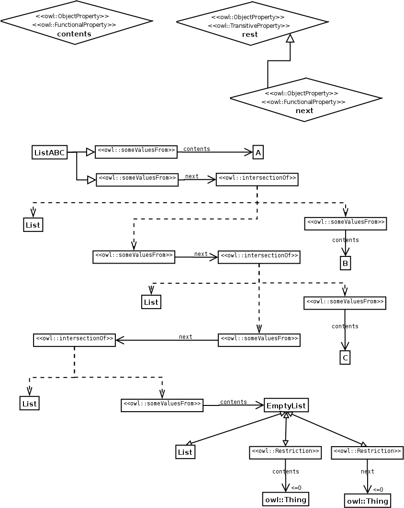
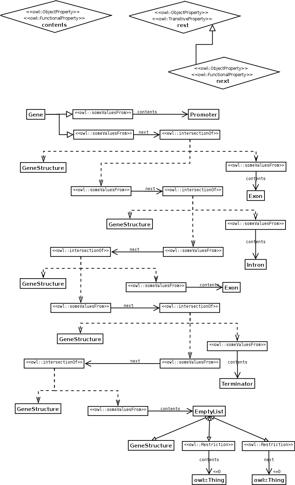

NAME: List.
ALSO KNOWN AS: Linked list.
CLASSIFICATION: Domain Modelling.
MOTIVATION: An ordered group of elements is a very intuitive modelling structure, yet the semantics of such a construct in OWL DL are complex. Biology is full of structures where the order of the elements is vital (e.g. parts of genes). If that order is altered (e.g. a change of the order of introns and exons in a gene) there can be serious damage in biological systems.
AIM: The List is used to model ordered elements, representing the semantics of the order: in this case the ODP will be used to build a gene starting from some elements of the Sequence Ontology: Promoter (SO:0000167), Terminator (SO:0000141), Intron (SO:0000188) and Exon (SO:0000147). For the sake of clarity a minimalist gene is built, with a very simple structure.
STRUCTURE:
SAMPLE:
ELEMENTS: The most important elements are the different classes that can be used to build the List (Promoter, Terminator, Intron and Exon) and the class that it is modelled using the List (in this case Gene). The needed relationships are: Contents (functional), Rest (transitive) and Next (functional and a subproperty of Rest).
IMPLEMENTATION: There is a Protege wizard available for easily creating lists.
RESULT: The result is the class Gene, with the elements in the proper order. Apart of being an efficient way of modelling ordered elements, Lists offer the possibility of creating a powerful classyfing system: Lists of plenty of kinds can be defined (e.g. definitions of the following type: any List containing elements A and B, not followed by C and then followed by two D-s) and they will be put in the correct position of the hierarchy of already defined lists. Using that procedure, for example, different protein fingerprints (lists of regular expressions) or different kinds of genes can be defined. The models can be queried, for example, with a given gene defined with a certain ordered combination of introns, exons, promoter and terminator to see in which position of the hierarchy is classified and to which genes does it relate.
SIDE EFFECTS: (i) If very long and complex lists are used there can be a decrease in reasoning performance. (ii) Maintenance of Lists is a very difficult task.
ADDITIONAL INFORMATION: The Linked List is one of the oldest and most widely used data structures in computer science; plenty of programming languages offer primitives similar to it. The Circularly Linked List is a List that ends up with the beggining of itself, creating a circle. The application of the Circularly Linked List in OWL DL has not been investigated yet. The wikipedia entry offers plenty of information on the subject: http://en.wikipedia.org/wiki/Linked_list.
REFERENCES:
URL: http://odps.sourceforge.net/odp/owl/Domain_Modelling_ODP/List.owl